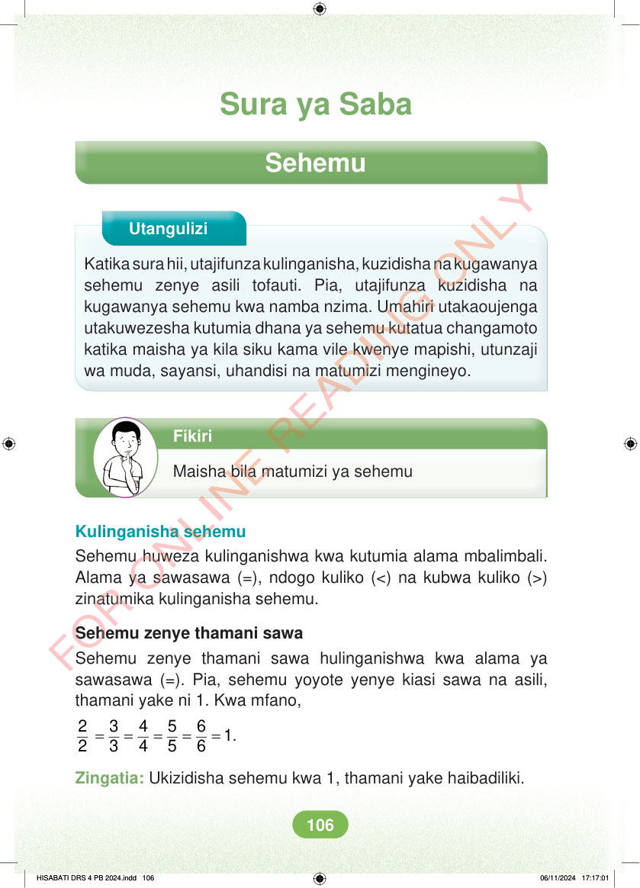

Sura ya Saba Sehemu Utangulizi Katika sura hii, utajifunza kulinganisha, kuzidisha na kugawanya sehemu zenye asili tofauti. Pia, utajifunza kuzidisha na kugawanya sehemu kwa namba nzima. Umahiri utakaoujenga utakuwezesha kutumia dhana ya sehemu kutatua changamoto katika maisha ya kila siku kama vile kwenye mapishi, utunzaji wa muda, sayansi, uhandisi na matumizi mengineyo. Fikiri Maisha bila matumizi ya sehemu Kulinganisha sehemu Sehemu huweza kulinganishwa kwa kutumia alama mbalimbali. Alama ya sawasawa (=), ndogo kuliko (<) na kubwa kuliko (>) zinatumika kulinganisha sehemu. Sehemu zenye thamani sawa Sehemu zenye thamani sawa hulinganishwa kwa alama ya sawasawa (=). Pia, sehemu yoyote yenye kiasi sawa na asili, thamani yake ni 1. Kwa mfano, = = = = = 2 3 4 5 6 1 2 3 4 5 6 . Zingatia: Ukizidisha sehemu kwa 1, thamani yake haibadiliki. HISABATI DRS 4 PB 2024.indd 106 HISABATI DRS 4 PB 2024.indd 106 06/11/2024 17:17:01 06/11/2024 17:17:01